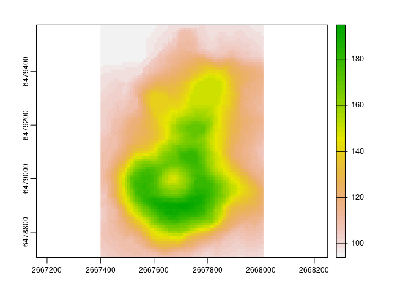
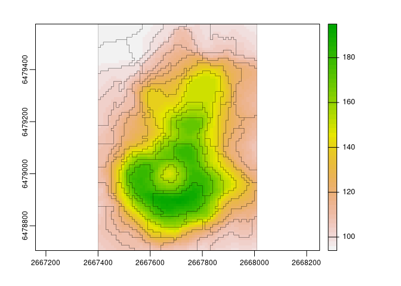

The goal of supercells is to utilize the concept of superpixels to a variety of spatial data. This package works on spatial data with one variable (e.g., continuous raster), many variables (e.g., RGB rasters), and spatial patterns (e.g., areas in categorical rasters). It is based on the SLIC algorithm (Achanta et al. (2012), doi:10.1109/TPAMI.2012.120), and readapts it to work with arbitrary dissimilarity measures.
Installation
You can install the development version from GitHub with:
# install.packages("remotes")
remotes::install_github("Nowosad/supercells")Example
library(supercells)
library(terra)
#> terra version 1.3.17
library(sf)
#> Linking to GEOS 3.9.0, GDAL 3.2.2, PROJ 7.2.1
vol = rast(system.file("raster/volcano.tif", package = "supercells"))
plot(vol)
vol_slic1 = supercells(vol, k = 50, compactness = 1)
plot(vol)
plot(st_geometry(vol_slic1), add = TRUE, lwd = 0.2)
Contribution
Contributions to this package are welcome - let me know if you need other distance measures or transformations, have any suggestions, or spotted a bug. The preferred method of contribution is through a GitHub pull request. Feel also free to contact us by creating an issue.